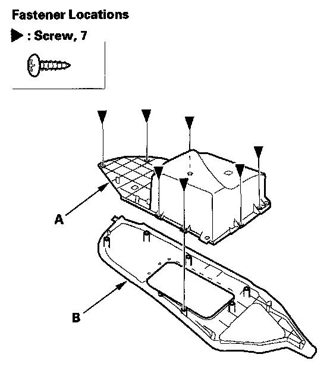
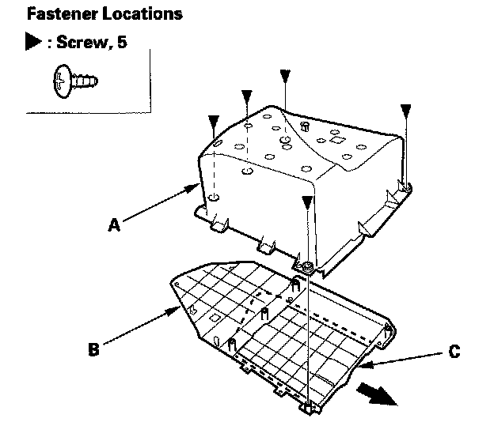

Center Console Side Pocket
Center Console Side Pocket Replacement1. Remove the passenger's center console trim.

2. Remove the screws, then remove the console side pocket (A) from the passenger's center console trim (B).

3. Separate the box (A) and rail (B), then slide the console side lid (C) out.
4. Install the pocket in the reverse order of removal.